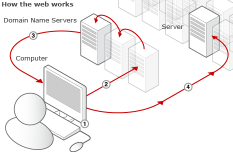
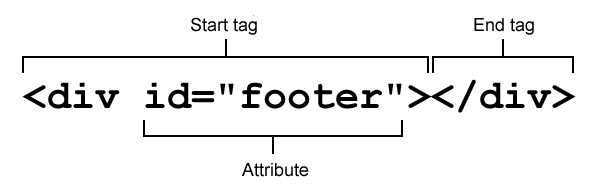
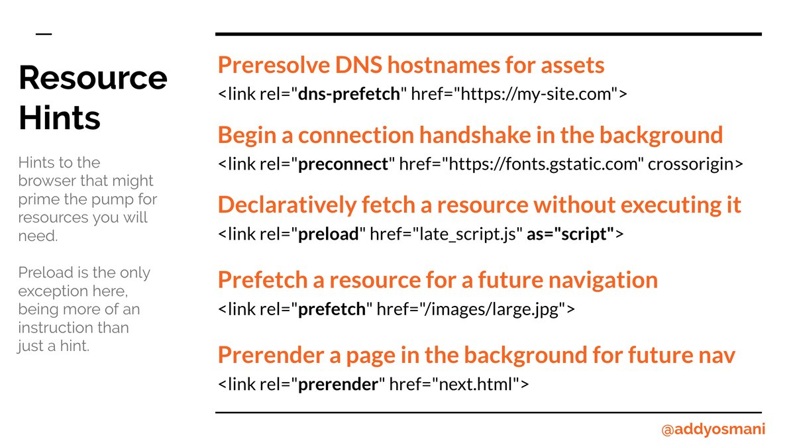
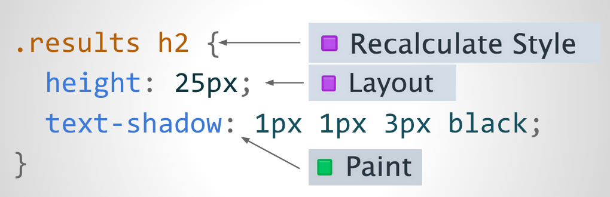
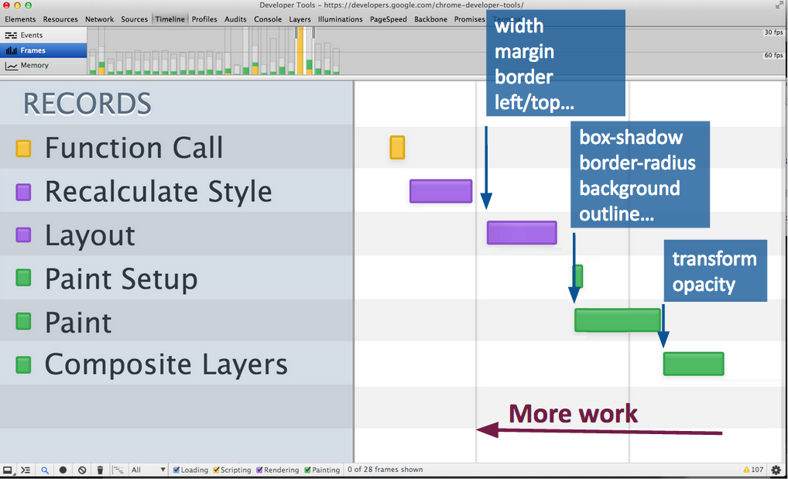
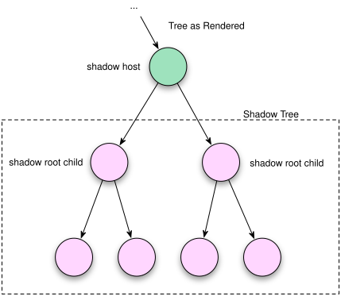

/me
Varunkumar Nagarajan

Course structure
|
|
Course structure
|
Disclaimer
- Not a professional trainer
- Not an expert either
- Never finished my talks on time :|
- Might be too fast / slow at times
- Feel free to stop me anytime and ask questions
Let's get started
Once upon a time...
- Web was just a platform for creating interactive and navigable contents
- HTML was used to define the static text and images
- JavaScript to control interactions and animations
- CSS to present the content
- Capabilities on the browser were limited
- We need to depend on backend servers to accomplish most of the user tasks
Today's Web...
We have come a long way from where it started...
- Browsers are becoming powerful day by day
- Web apps of today are as powerful as native apps
- We can build complex web applications with richer contents
- We can
- Build apps which can work offline
- Access devices from our web apps
- Even have databases / complete file system on the client side
- Do real-time communication on the web and much more...
- Chrome experiments ★ Find your way to OZ
Thanks to recent developments, we can do amazing stuff on the web
Evolution of the web
- Internet
- Client - Browser, Scripts, Headless browser
- Server
Internet - The Web
Interconnected network of nodes - Provider and consumer
The whole world is well conencted today
Fibre lines, ultra fast ISPs

How do they communicate?
They use HTTP as the main communication channel
HTTP works in a request / response model

Request URL

URL Resolution

HTTP Basics
Request / Response headers
Message body
HTTP Verbs
- GET
- POST
- PUT
- DELETE
- OPTIONS
- PATCH
- CONNECT
HTTP response codes
Server components
Language agnostic
Web Server - Apache, nginx
Application Container - Tomcat, jetty
Load Balancer
Cache engines and so many other components...
Evolution of web technologies - Static vs Dynamic contents
- HTML
- DHTML
- Servlets / JSP / ASP
- MVC - Struts, Spring MVC
- AJAX
- WebSockets - Push
- WebRTC - Peer to Peer communication
- WebTorrents (Web2Web). This leads to serverless concepts - The Future
Session management
Session
- HTTP protocols / web servers are stateless
- Shared state between client and server
- Session management techniques
- User authentication tokens
- Hidden field
- URL rewritting
- Cookies
Browser components
DOM Parser
Rendering / Layout Engine - WebKit, Blink, Gecko, Servo, Trident, Presto, EdgeHTML
JavaScript Engine - V8, SpiderMoney, IonMonkey, Carakan, Chakra, Nitro, SquirrelFish, ChakraCore
Net module
Developer Tools

Browser components

Developing for the web
Browser compatibility
Markup language
Flexible nature of the language
Allows scope for errors
Async nature of the language
Maintainability
Accessibility
Device Compatibility
Web Crawlers / Search engines
Highly performant
Follow better engineering practices
HTML
Markup, the basis of every page
Gives structure to your content

HTML
Elements and attributes are case insensitive
Certain elements don't need a closing tag. Ex: img, br, hr
Shorthand can be used for certain attributes. Ex: input required
Doctype defines what elements and attributes are allowed to be used in a certain flavor of HTML
Postel's law: Be conversative in what you do (send); be liberal in what you accept
- The squirrel page -- http://lcamtuf.coredump.cx/squirrel/
- More details here
Semantic elements - section, hgroup, article, header, footer, picture, div vs span vs p
Remember, its always a good practise to validate your HTML
HTML5
Semantics
Offline & Storage
Device access - Geolocation API, NetInfo API, GUM
Connectivity - Web sockets, WebRTC
Multimedia - Audio, video
3D, Graphics & Effects - WebGL, Canvas, CSS3 3D
Performance - Web Workers, NavigationTimingAPI
CSS3
Best practices
- Page load optimization - spriting, inlining, domain sharding, and concatenation
- Async JavaScript loading - async, defer
- Resource hints: Prefetch, precache, preconnect
- HTTP/2 considerations - ship small, granular resources. Multiplexing & header compression. For developers

CSS - let's add some style
Gives you fine control over the formatting of contents
Provides layout for the documents
Not a programming language. Not a markup languge. Just a set of rules.
Works on a set of rules
- Select elements you want to style
- Set values for different properties
color, background, font sizes and styles, position
CSS3 - Animation, transition, transformation and much more. Demo
CSS - Execution model
Recalculation
Layout
Paint
Composition
CSS - Execution model

CSS - Execution model

CSS - Box Model
A box that wraps every HTML element

CSS - Layouts
Flow layout
Table layout
display: none, block, inline
position: static, absolute, relative, fixed
float: left, right
And, the awesome CSS Shapes and Flex layout Latest
CSS - Selectors
.class, #id, *, element
element,element element element element>element element+element
[attribute], [attribute=value], [attribute*=value], [attribute^=value], [attribute$=value]
Pseudo classes :hover, :visited, :active, :first-child, :nth-child(n)
Best practices
Avoid inline styling
Use classes appropriately
Be considerate about performance
Use inline and block styling effectively
Use shorthand for properties
JavaScript - Adding behavior to web pages
Java:JavaScript::Car:Carpet
Scripting language for adding behavior to web pages
- Validate the data you enter in a form
- Handle page events
- Change contents on the page dynamically
- Change styles on the fly
- Animate page elements
- And, a million other things
Most modern JS apps work by finding a target element and add some actions to it.
JavaScript - Overview
Object Oriented dynamic typeless language
Syntax closer to Java and C
No classes. Class functionality is accomplished by object prototypes
Functions are objects and can be passed around like any other objects
Interpretted or compiled?
JavaScript - Types
Number - double precision 64 bit values. NaN, Infinity
String - Single quote vs double quote
Boolean
- false - false, 0, "", NaN, null and undefined
- true - every other value
- convert to boolean !!(expression)
Symbol - No explicit object wrapper
Object - Function, Array, Date, RegExp
Null vs Undefined
Primitive Object Wrappers: String(), Number(), Symbol(). Use valueOf() to get primitive type
Host objects
JavaScript - Types
// Numbers
typeof 37 === 'number';
typeof 3.14 === 'number';
typeof Infinity === 'number';
typeof NaN === 'number'; // Despite being "Not-A-Number"
typeof Number(1) === 'number'; // but never use this form!
// Strings
typeof '' === 'string';
typeof 'bla' === 'string';
typeof (typeof 1) === 'string'; // typeof always returns a string
typeof String('abc') === 'string'; // but never use this form!
// Booleans
typeof true === 'boolean';
typeof false === 'boolean';
typeof Boolean(true) === 'boolean'; // but never use this form!
// Symbols
typeof Symbol() === 'symbol'
typeof Symbol('foo') === 'symbol'
typeof Symbol.iterator === 'symbol'
// Undefined
typeof undefined === 'undefined';
typeof declaredButUndefinedVariable === 'undefined';
typeof undeclaredVariable === 'undefined';
// Objects
typeof {a:1} === 'object';
// use Array.isArray or Object.prototype.toString.call
// to differentiate regular objects from arrays
typeof [1, 2, 4] === 'object';
typeof new Date() === 'object';
// The following is confusing. Don't use!
typeof new Boolean(true) === 'object';
typeof new Number(1) === 'object';
typeof new String('abc') === 'object';
// Functions
typeof function(){} === 'function';
typeof class C {} === 'function';
typeof Math.sin === 'function';
JavaScript - Scope
Global scope
Function scope
Block scope - let, const (Use babel)
var messages = ['This', 'is', 'a', 'test'];
for (var i = 0; i < messages.length; i++) {
setTimeout(function () {
console.log(messages[i]);
}, i * 1500); // Async call
}
JavaScript - Scope
let vs var
- let variables are block scoped
- Global let variables are not properties on the global object
- Loops create fresh bindings for iterator
- ReferenceError on accessing before declaration
- SyntaxError on redeclaring let variables
const messages = ['This', 'is', 'a', 'test'];
for (let i = 0; i < messages.length; i++) {
setTimeout(function () {
console.log(messages[i]);
}, i * 1500);
}
JavaScript - Hoisting
doSomething(123);
function doSomething(arg1) {
console.log(arg1);
}
num = 6;
num + 7;
var num;
/* gives no errors as long as num is declared*/
// Hoists only the declaration and not initialization
var x = 1; // Initialize x
console.log(x + ' ' + y); //y is undefined
var y = 2;
//the above code and the below code are the same
var x = 1; // Initialize x
var y; // Initialize y
console.log(x + ' ' + y); //y is undefined
y = 2; // Declare y
JavaScript - Objects
Name-value pairs
Creating an object:
var obj = new Object();
var obj = {}; // Called as an object literal
Accessing properties:
obj.name = 'Varunkumar';
var name = obj.name;
obj['name'] = 'Varunkumar';
var name = obj['name']; // obj[some_variable]
for (var key in obj) {
var value = obj[k];
}
// Recommended way
var keys = Object.keys(obj);
for (var i = 0, len = keys.length; i < keys.length; i++) {
var value = obj[keys[i]];
}
JavaScript - Arrays
Special object with a magical length property
length is one more than the highest index (not necessarily the count)
var obj = new Array();
var obj = []; // Called as an object literal
Manipulate array:
var a = [];
a.push(1);
var val = a.pop();
a.unshift(2);
var val = a.shift();
a.slice();
a.splice();
a.toString(); a.join(separator);
a.reverse();
a.concat(item1, [itemN]); a.sort(fn);
JavaScript - Functions
Unlike traditional languages, JS functions can be called with lesser or more number of args
function add(x, y) {
var total = x + y;
return total;
}
add(); // NaN; x & y are null
add(10, 13); // 23;
add(10, 13, 13); // 23; the last argument is ignored
Functions have access to an additional variable called arguments
function add() {
var args = Array.prototype.slice.call(arguments);
return args.reduce(function(a, b) {
return a + b;
});
}
JavaScript - Functions
Anonymous functions - aka callbacks
You can define a function within another function
Inner functions can access all the variables in the parent function's scope
This leads to the most powerful abstraction in JS - Closures
JavaScript - Closures
Closure is a combination of a function and the scope object in which it is created
function makeAdder(a) {
// returning an anonymous function
return function(b) {
return a + b;
};
}
x = makeAdder(5);
y = makeAdder(20);
x(6); // returns 11
y(7); // returns 27
Did you notice that the state is being saved? Isn't that the basics of an object?
JavaScript - this
this - the most confusing part of the language
var x = 9;
var module = {
x: 81,
getX: function() { return this.x; }
};
module.getX();
var retrieveX = module.getX;
retrieveX();
JavaScript - this
this - the most confusing part of the language
this.x = 9;
var retrieveX = function() { return this.x; }
var module = {
x: 81,
getX: retrieveX
};
module.getX();
retrieveX();
JavaScript - binding this
apply vs call vs bind
this.x = 9;
var retrieveX = function() { return this.x; }
var module = {
x: 81,
getX: retrieveX
};
module.getX();
retrieveX();
// Create a new function with 'this' bound to module
var boundGetX = retrieveX.bind(module);
boundGetX(); // 81
retrieveX.apply(module, [element1, element2]);
retrieveX.call(module, arg1, arg2);
JavaScript - ES6 features
- let & const
- Iterators & for-of
- Template literals
- Default & rest params
- Arrow functions
- Destructuring
- Spread operator
- Collections
- Generators & decorators (ES7)
JavaScript - Iterators & for-of
Loop through all collections
const colors = ['red', 'blue', 'green'];
for (const color of colors) {
console.log(color);
}
const uniqueWords = new Set(words);
for (const [key, value] of phoneBookMap) {
console.log(key + "'s phone number is: " + value);
}
for (const char of 'India') {}
// Make any object iterable
myObject[Symbol.iterator]()
=> Needs to return an iterator object. .next() => {done: fale, value: 0}
JavaScript - Template literals
Interpolate expressions within strings
Support multilines
`Greetings ${user}!!
You have ${count} unread mails`
Not a replacement for template engines like Mustache - No looping, conditionals
Tagged template literals
var a = 5;
var b = 10;
function tag(strings, ...values) {
console.log(strings[0]); // "Hello "
console.log(strings[1]); // " world "
console.log(strings[2]); // ""
console.log(values[0]); // 15
console.log(values[1]); // 50
return "Bazinga!";
}
tag`Hello ${ a + b } world ${ a * b }`;
JavaScript - Default & rest params
Default params
Default value expressions are evaluated at function call time
Default params cascade
function setBackgroundColor(element, color = 'red') {
element.style.backgroundColor = color;
}
setBackgroundColor(someDiv); // color set to 'red'
setBackgroundColor(someDiv, undefined); // color set to 'red' too
setBackgroundColor(someDiv, 'blue'); // color set to 'blue'
JavaScript - Default & rest params
Rest params
No 'arguments' special object when rest / default params are used
function add(...args) {
return args.reduce(function(a, b) {
return a + b;
});
}
JavaScript - Arrow function
Short hand form of functions
function add(...args) {
return args.reduce((a, b) => a + b);
}
let add = (...args) => args.reduce((a, b) => a+b);
let myFunc = (args) => {
// do something
}
let myFunc = (args) => ({} // Object being returned)
JavaScript - Arrow function
No binding of this
function Person() {
// The Person() constructor defines `this` as an instance of itself.
this.age = 0;
setInterval(function growUp() {
// In non-strict mode, the growUp() function defines `this`
// as the global object, which is different from the `this`
// defined by the Person() constructor.
this.age++;
}, 1000);
}
var p = new Person();
JavaScript - Arrow function
// ES5 solution
function Person() {
var that = this;
that.age = 0;
setInterval(function growUp() {
// The callback refers to the `that` variable of which
// the value is the expected object.
that.age++;
}, 1000);
}
// Arrow fn
function Person(){
this.age = 0;
setInterval(() => {
this.age++; // |this| properly refers to the person object. Revisit confusing this
}, 1000);
}
JavaScript - Destructuring
Assign properties of an array or object to variables
var first = someArray[0];
var second = someArray[1];
var third = someArray[2];
var [first, second, third] = someArray; // concise and readable -- really??
var [foo, [[bar], baz]] = [1, [[2], 3]]; // Nesting is allowed
var [,,third] = ["foo", "bar", "baz"]; // Skip element
var [head, ...tail] = [1, 2, 3, 4]; // use rest pattern
var [missing] = []; // out of bounds access
JavaScript - Destructuring
Destructuring objects. Useful for function params extraction.
var foo = obj.foo;
var bar = obj.bar;
var { foo: fooVar, bar: barVar} = { foo: "lorem", bar: "ipsum" };
var { foo, bar } = { foo: "lorem", bar: "ipsum" };
// shorthand when properties and variable names are the same
var complicatedObj = {
arrayProp: [
'abc',
{ second: 'asdf' }
]
};
var { arrayProp: [first, { second }] } = complicatedObj;
var { missing } = {}; // undefined
{ blowUp } = { blowUp: 10 }; // assignment without declaration -- SyntaxError
({ safe } = { safe: 10}); // wrap in paranthesis
var [missing = true] = []; // default params
JavaScript - Spread operator
Expand expressions to multiple args, variables, assignments
interableObj = [1, 2, 3];
myFunction(...iterableObj); // calls myFunc with multiple params
[...iterableObj, 4, 5, 6];
myFunction.apply(null, args); -> myFunction(...args); // Apply can be replaced with spread
let arr1 = [1, 2, 3], arr2 = ['a', 'b'];
arr3 = [...arr1, ...arr2]; // concatenation
JavaScript - Collections
Set, Map - Many helper methods
arrayOfWords.indexOf('searchword') !== -1 // slow
setOfWords.has('searchWord') // fast
setOfWords[15000] // sets don't support indexing
var urls = new Set;
urls.add(new URL(location.href)); // two URL objects.
urls.add(new URL(location.href));
alert(urls.size); // ??
Hash tables without hash codes
Deterministic order of retrieval
JavaScript - Collections
WeakMap, WeakSet - Restrictions
- WeakMap supports only new, .has(), .get(), .set(), and .delete()
- WeakSet supports only new, .has(), .add(), and .delete()
- Values stored must be objects
- Not iterable
- GC can decide when to clean up references in the collection
JavaScript - Generator
Generator object confirms to both iterable and iterator protocols
function* idMaker() {
var index = 0;
while(true) {
yield index++;
}
}
var gen = idMaker(); // "Generator { }"
console.log(gen.next().value); // 0
console.log(gen.next().value); // 1
console.log(gen.next().value); // 2
JavaScript - Decorator
Decorator (ES7 aka ES2016) is a function that takes another func extending the behavior of latter without modifying it
Applied using '@'
Applied for properties and classes
class A {
@readonly
someFunc() {}
}
readonly = (target, key, descriptor) => { // do something with descriptor }
JavaScript - Transpiling
Use next JavaScript, today
Same as polyfill?
Traceur, Babel and others
[1,2,3].map(n => n + 1);
[1,2,3].map(function(n) {
return n + 1;
});
String.padStart -> will be polyfilled
JavaScript - Babel
AST level transformation
Dynamically in the browser
Transpile as part of build process
Vast ecosystem with plenty of plugins
Side effects
- Generated code
- Debugging with sourcemap is difficult
JavaScript - DOM Manipulation
document.getElementById, document.querySelector()
createElement(), getAttribute(), setAttribute()
appendChild(), innerHTML, removeChild(), replaceChild()
Event handling - onclick, onload, onchange
document.getElementById('myBtn').onclick=function(){displayDate()};
document.getElementById('myBtn')
.addEventListenter('click', e => {}, {once: true, capture: true, passive: true});
JavaScript - Strict mode
Enabling strict mode: whole script, function
Converts mistakes into errors, Simplify variable use cases
- Undeclared variables
- Make assignments to non-writable properties
- Delete undeletable properties
- Duplicate names in object literal
- Duplicate parameter names
- Prohibits 'with'
More details here
Minification and strict mode
JavaScript patterns
IIFE - Powerful pattern
Prevents leakage of variables
(function() { })();
Module pattern - IIFE which returns an object
Singleton, Observer, Pub/sub, factory
JavaScript - Basic class
JS is a prototype-based language without class statement
JS uses functions as classes
Always use Capitalized names to differentiate class names and normal functions
Class is made up of two parts in JavaScript:
- constructor - This function contains all the logic to create an instance of the "class", i.e. instance specific code.
- prototype - This is the object the instance inherits from. It contains all methods (and other properties) that should be shared among all instances.
var Animal = function(name) { this.name = name; }
Animal.prototype = {print: function() { console.log(this.name); } }
var Dog = function() { return Animal.call(this, 'Dog'); }
Dog.prototype = Object.create(Animal.prototype);
Dog.prototype.constructor = Dog;
Dog.prototype.bark = function() { console.log('bark'); }
JavaScript - ES6 class
Syntatic sugar over prototype classes
Can use as class expression as well
Class definitions are always executed in strict mode
class Animal {
constructor() { this.name = name; }
print() {
console.log(this.name);
}
static whoAmI() {
console.log('This is inside Animal class');
}
}
class Dog extends Animal {
constructor() {
super();
}
print() {
super.print();
console.log('Printing from dog class');
}
bark() {}
}
JavaScript - Objects & Properties
Object.preventExtensions()
Object.isExtensible()
Property
- Data: value, get, set
- Descriptor: writable, enumerable, configurable
Object.getOwnPropertyDescriptor()
Object.defineProperty(), Object.defineProperties()
Object.keys(), Object.getOwnPropertyNames()
Object.seal(), Object.isSealed()
Object.freeze(), Object.isFrozen()
JavaScript - ES6 modules
CommonJS module - mostly for node.js
JavaScript - ES6 modules
AMD modules - mostly for browser usage
JavaScript - ES6 modules
Has goodies of both CommonJS + AMD. Blog
Named exports
//------ lib.js ------
export const sqrt = Math.sqrt;
export function square(x) {
return x * x;
}
export function diag(x, y) {
return sqrt(square(x) + square(y));
}
//------ main.js ------
import { square, diag } from 'lib';
console.log(square(11)); // 121
console.log(diag(4, 3)); // 5
//------ main.js ------
import * as lib from 'lib';
console.log(lib.square(11)); // 121
console.log(lib.diag(4, 3)); // 5
JavaScript - ES6 modules
Default exports
//------ MyClass.js ------
export default class { ... };
//------ main2.js ------
import MyClass from 'MyClass';
let inst = new MyClass();
import { default as someVar} from 'MyClass'; // same as above
const D = 123;
export { D as default };
export { D as someName };
// Reexporting
export * from 'src/other_module';
export { foo, bar } from 'src/other_module';
// Export other_module’s foo as myFoo
export { foo as myFoo, bar } from 'src/other_module';
JavaScript - ES6 modules
Import options
// Default exports and named exports
import theDefault, { named1, named2 } from 'src/mylib';
import theDefault from 'src/mylib';
import { named1, named2 } from 'src/mylib';
// Renaming: import named1 as myNamed1
import { named1 as myNamed1, named2 } from 'src/mylib';
// Importing the module as an object
// (with one property per named export)
import * as mylib from 'src/mylib';
// Only load the module, don’t import anything
import 'src/mylib';
JavaScript - Callback hell
Callbacks lead to Spaghetti code
How to fix?
- Name your functions
- Keep your code shallow
- Modularize
ES6 solutions
- Promises
- Async / await (ES7)
JavaScript - Callback hell
Promises - state object for async operations
State: fullfilled (resolved), rejected, pending, settled (fullfilled / rejected)
var promise = new Promise(function(resolve, reject) {
// do a thing, possibly async, then…
if (/* everything turned out fine */) {
resolve('Stuff worked!');
} else {
reject(new Error('It broke'));
}
});
promise.then(function(result) {
console.log(result); // "Stuff worked!"
}, function(err) {
console.log(err); // Error: "It broke"
});
JavaScript - Callback hell
Async / await
Write promise-based code as if it were synchronous (still being non-blocking)
async function myFirstAsyncFunction() {
try {
const fulfilledValue = await promise;
}
catch (rejectedValue) {
// …
}
}
Async functions always return promise (fullfilled by return value; reject on error)
async can be used with arrow functions, class methods, etc.
CORS
Same origin policy - JSONP, crossdomain.xml in flash
Cross-Origin Resource Sharing - Blog
Not to be confused as an auth layer
Preflight
- Browser decides when to send
- Use HTTP OPTIONS verb
- Preflight request is internal to browser. No trace on devtools
- Preflight request has to be unauthenticated
CORS
Headers: Access-Control-Request-Method, Access-Control-Request-Headers, Origin, Access-Control-Allow-Origin, Access-Control-Allow-Method, Access-Control-Allow-Headers

CORS
Enabling CORS on the server - Read CORS request, respond CORS response based on headers
Filters available for Java
CORS are enabled by default in XmlHTTPRequest
Use .withCredentials property to instruct browser to send Authorization header
CORS for images? - crossOrigin attribute
CORS for static script? - Gives DOM access, better error handling support with window.onerror
UI development - What's missing?
The fundamental problem is the lack of DOM encapsulation which could lead to
- Collision of DOM contents (ID collision)
- Broken styles
- Unexpected JavaScript behavior
Libraries work around these problems by following certain assumptions and conventions
Modularize the Web
MV* frameworks help us to some extent
- Organize the complexity
- Separate contents from the presentation layer
- Define Templates / views
- Associate a model with the view
- Monitor the model for changes and update the view (Data binding)
- Does it solve all the problems? Lets see.


 The templates of today
The templates of today
Method #1: "offscreen" DOM using [hidden] or display:none
<div id="mytemplate" hidden>
<img src="logo.png">
<div class="comment"></div>
</div>
- We're working directly w/ DOM.
- Resources are still loaded (e.g. that
<img>) - Other side-effects like URLs not being fully composed yet.
- Style and theming is painful.
- embedding page must scope all its CSS to
#mytemplate. - no guarantees on future naming collisions.
- embedding page must scope all its CSS to
The templates of today
Method #2: manipulating markup as string. Overload <script>:
<script id="mytemplate" type="text/x-handlebars-template">
<img src="logo.png">
<div class="comment"></div>
</script>
- encourages run-time string parsing (via
.innerHTML)- may include user-supplied data → XSS attacks.
Examples: handlebars.js, John Resig's micro-template script
What do we have in JS space?
- JavaScript Object constructor and Module patterns
- Listening to changes
- Model - via Wrapper object. Dirty check
- View - via event handlers, DOM Mutation events - Not efficient
UI Encapsulation
Fundamental foundation of OOP
Separates code you wrote from the code that will consume it
We don't have it on the web!
Well, sort of:
<iframe>
<iframe> are heavy and restrictive. ★ Seamless iframe
Web components
Defining Web Components
key players
<template>- inert chunks of clonable DOM. Can be activated for later use
- Custom elements
- create new HTML elements - expand HTML's existing vocabulary.
- extend existing DOM objects with new imperative APIs
- Shadow DOM
- building blocks for encapsulation & boundaries inside of DOM
Defining Web Components
supporting cast
- Style encapsulation
- Knowledge into app's state
- DOM changes:
MutationObserver - Model changes:
Object.observe() (Deprecated now), Proxy
- DOM changes:
- CSS variables,
calc()
A collection of new capabilities on the browser
Web components - Templates
 Templates
Templates
<template>
Contains inert markup intended to be used later:
<template id="mytemplate"> <img src=""> <div class="comment"></div> </template>
- We're working directly w/ DOM again.
- Parsed, not rendered
<script>s don't run, images aren't loaded, media doesn't play, etc.
Templates
- Appending inert DOM to a node makes it go "live":
var t = document.querySelector('#mytemplate');
t.content.querySelector('img').src = 'http://...';
document.body.appendChild(t.content.cloneNode(true));
Web components - Shadow DOM
Shadow DOM
Is complex! Let's cover the basics:
- Concept of Shadow DOM
- Creating Shadow DOM
- Insertion Points
- Styling
- encapsulated styles & shadow boundaries
Turns out...
- DOM nodes can already "host" hidden DOM.
- It can't be accessed traversing the DOM.
So...browser vendor's have been holding out on us!
Shadow DOM
exposes the same internals browser vendors have been using to implement their native controls, to us
Attaching Shadow DOM to a host

Shadow tree is rendered instead

Creating Shadow DOM
<div id="host"> <h1>Varunkumar Nagarajan</h1> <h2>Hyderabad, India</h2> <div>...other content...</div> </div>
var host = document.querySelector('#host');
var shadow = host.createShadowRoot();
shadow.innerHTML = '<h2>Yo, you just got replaced!</h2>' +
'<div>Who? Varunkumar (@varunkumar)</div>';
// host.shadowRoot;
Varunkumar Nagarajan
Hyderabad, India
...other content...
Style encapsulation
<style>s defined in ShadowRoot are scoped.
var shadow = document.querySelector('#host').createShadowRoot();
shadow.innerHTML = '<style>h2 { color: red; }</style>' +
'<h2>Yo, you got replaced!</h2>' +
'<div>Who? Varunkumar (@varunkumar)</div>';
Varunkumar Nagarajan
Hyderabad, India
...other content...
Author's styles don't cross shadow boundary by default.
Change the behavior via properties resetStyleInheritance and applyAuthorStyles
Remember our host node
<div id="host"> <h1>Varunkumar Nagarajan</h1> <h2>Hyderabad, India</h2> <div>...other content...</div> </div>
that guy rendered as:
<div id="host">
#shadow-root
<style>h2 {color: red;}</style>
<h2>Yo, you got replaced!</h2>
<div>Who? Varunkumar (@varunkumar)</div>
</div>
...everything was replaced when we attached the shadow DOM
Shadow DOM insertion points
funnels for host's children
Shadow DOM insertion points
funnels for host's children
<content>elements are insertion points.selectattribute uses CSS selectors to specify where children are funneled.
<div id="host"> <firstName>Varunkumar</firstName> <lastName>Nagarajan</lastName> <city>Hyderabad, India</city> <div>...other content...</div> </div>
<style>
h2 {color: red;}
</style>
<hgroup>
<h2><content select="firstName"></content>
(@varunkumar)</h2>
<content select="city"></content>
</hgroup>
<content select="*"></content>
...other content...
Web components - Observers
Mutation Observers
watch for changes in the DOM
- Defined in DOM4 ( Yep. We're on DOM4! )
- Observers, not listeners
- triggered by DOM changes rather than events (e.g.
oninput,click)
- triggered by DOM changes rather than events (e.g.
- Callback triggered at the end of DOM modifications.
- provided a list of all changes (
MutationRecords)
- provided a list of all changes (
- Replacement for
MutationEventperformance / stability bottlenecks. - Availability: Chrome, Safari, FF
Example
observe child node insertion/deletions
var observer = new MutationObserver(function(mutations, observer) {
mutations.forEach(function(record) {
for (var i = 0, node; node = record.addedNodes[i]; i++) {
console.log(node);
}
});
});
observer.observe(el, {
childList: true, // include childNode insertion/removals
//subtree: true, // observe the subtree root at el
//characterData: true, // include textContent changes
//attribute: true // include changes to attributes within the subtree
});
// observer.disconnect() // Stop observations
Mutation Observers vs. Mutation Events
MutationEvent
- Deprecated in DOM Events spec
- Adding listeners degrades app performance by 1.5-7x!
- slow because of event propagation and synchronous nature
- fire too often: every single change
- removing listener(s) doesn't reverse the damage
- Inconsistencies with browser implementations.
Don't use Mutation Events!
Comparison Example
// MutationEvent
document.addEventListener('DOMNodeInserted', function(e) {
console.log(e.target);
}, false);
// MutationObserver
var observer = new MutationObserver(function(mutations, observer) {
mutations.forEach(function(record) {
for (var i = 0, node; node = record.addedNodes[i]; i++) {
console.log(node);
}
});
}).observe(document, {childList: true});
Mutation Observers vs. Mutation Events
- Parthiv Patel
- R Ashwin
- Umesh Yadav
- Jayant Yadav
- Ravindra Jadeja
- Virat Kohli
- Mohd Shami
- Ajinkya Rahane
- Cheteswar Pujara
- Murali Vijay
- Karun Nair
Object.observe()
watch changes to JS objects
Object.observe : JS objects :: MutationObserver : DOM
function observeChanges(changes) {
console.log('== Callback ==');
changes.forEach(function(change) {
console.log('What Changed?', change.name);
console.log('How did it change?', change.type);
console.log('What was the old value?', change.oldValue );
console.log('What is the present value?', change.object[change.name]);
});
}
var o = {};
Object.observe(o, observeChanges);
// Object.unobserve(o, observeChanges); // Stop watching.
- Get notified when a property is added, deleted, or its value changes.
- Get notified when properties are reconfigured (e.g.
Object.freeze)
See Bocoup's writeup.
Proxy object
watch changes to JS objects
target, handler, traps - get, defineProperty, etc.
var handler = {
get: function(target, name){
return name in target ? target[name] : 37;
},
set: function(target, name, value, receiver) {
target[name] = value;
console.log(target, name);
return true;
}
};
var p = new Proxy({}, handler);
p.a = 1;
p.b = undefined;
console.log(p.a, p.b); // 1, undefined
console.log('c' in p, p.c); // false, 37
Custom Elements
Putting it all together
Do we have all the pieces to build components?
- Templates (
<template>) - Shadow DOM (
@host, styling hooks) - Mutation Observers,
Object.observe()
WE DO :)
Creating custom elements
Define a declarative "API" using insertion points:
<element name="x-tabs">
<template>
<style>...</style>
<content select="hgroup:first-child"></content>
</template>
</element>
Include and use it:
<link rel="components" href="x-tabs.html">
<x-tabs>
<hgroup>
<h2>Title</h2>
...
</hgroup>
</x-tabs>
Define an API
Define an imperative API:
<element name="x-tabs" constructor="TabsController">
<template>...</template>
<script>
TabsController.prototype = {
doSomething: function() { ... }
};
</script>
</element>
Declared constructor goes on global scope:
<link rel="components" href="x-tabs.html">
<script>
var tabs = new TabsController();
tabs.addEventListener('click', function(e) { e.target.doSomething(); });
document.body.appendChild(tabs);
</script>
Or, we can even extend existing elements
Developer Tools
- Firebug
- Chrome Developer Tools
- Firefox Developer Toolbar
- Opera DragonFly
- Safari
- IE Deverloper Tools
Chrome Developer Tools

Firefox Developer Toolbar

Firefox 3D Inspector (Tilt)

Firebug

Chrome Developer Tools
Webkit based. Dev tools is also a web application. Chrome dev tools cheatsheet
- Elements
- Console
- Source
- Network
- Timeline
- Profiles
- Application
- Security
- Audits
Chrome Developer Tools - Elements
Lets you see everything in one DOM tree, and allows inspection and on-the-fly editing of DOM elements.
- DOM Tree (Drag & drop to reorder elements)
- Live edit DOM elemens - Attributes, text, HTML.
- Force Element state - :active, :hover
- Subtree modifications event, DOM breakpoints
- Event Listeners
- CSS styles - Autocomplete, add new styles, Box model
- XPath and much more...
Chrome Developer Tools - Application
Lets you inspect resources that are loaded in the inspected page. It lets you interact with HTML5 Database, Local Storage, Cookies, AppCache, etc.
- Application - Manifest, Service Workers
- Storage - IndexedDB, Local Storage, Session Storage, Cookies, Web SQL
- Cache - Cache Storage, Application Cache
Chrome Developer Tools - Network
Lets you inspect resources that are downloaded over the network.
- Timeline waterfall
- Initiator, Time to first byte
- DOMContent event, Load event - Do UI heavy tasks on DOMContent.
- Export as HAR (HTTP Archive) - Awesomeness!!
- HAR Viewer
- Integrate with your continuous build system - Phantom + Yslow
phantomjs examples/netsniff.js http://www.varunkumar.me > output/snap-demo.har
yslow --info basic --format plain output/snap-demo.har
Chrome Developer Tools - Sources
Lets you debug your JavaScript code.
- More like an IDE - Tab navigator, Syntax highlighting, shortcuts
- Source Maps, Revision Control, Pretty Print
- Call stack, Watch expressions,
- Breakpoints
- Conditional breakpoints
- DOM breakpoints
- XHR breakpoints
- Event Listener breakpoints
- Workers, async code can be debugged
- Exceptions
- Stack trace on console, pause on next exception
- Printing stack trace - Error.stack, console.trace()
Chrome Developer Tools - Timeline panel
Gives you a complete overview of where time is spent when loading and using your web app or page. All events, from loading resources to parsing JavaScript, calculating styles, and repainting are plotted on a timeline.

Chrome Developer Tools - Profiles panel
Lets you profile the execution time and memory usage of a web app or page.
- JavaScript CPU profile
- Heap snapshot
- Record allocation timeline
Chrome Developer Tools - Console
- Firebug command line API
- $(id) - Returns a single element with the given id.
- $$(selector) - Returns an array of elements that match the given CSS selector.
- $0, $1, $n(index)
- copy(obj) - Ex: copy($0)
- inspect(obj) - Ex: inspect($0)
- debug(fn), undebug(fn) - Adds / removes breakpoint to first line of fn
- monitor(fn), unmonitor(fn) - Logs all the calls to fn
- monitorEvents(obj), unmonitorEvents(obj)
Chrome Developer Tools - Customizations
- Disable Cache. This works *only if the dev tools is open*
- Disable JavaScript. Works only if the dev tools is open.
- Responsive Design, change user agent.
- Throttle network
- Simulate touch events
- Log XHRs
- Custom extensions -- Ex: CSS Diff
- Skin your Chrome web inspector
Chrome Developer Tools - Remote debugging
- Start the target browser with the flag: --remote-debugging-port 9222
- Port forwarding for Chrome for Android: adb forward tcp:9222 localabstract:chrome_devtools_remote
- From the debug client: http://<hostname>:9222, http://<hostname>:9222/json
Note the WS:// references in json output. That is the communication channel between dev tools and the web page.
Tools
- Node.js
- Cross platform JS runtime environment
- Tools, applications, servers
- Event-driven architecture capable of async I/O
- Package managers - NPM, Bower, Yarn
- package.json
- local vs global
- Registry - npmjs.org, internal Nexus
- Grunt, gulp, Webpack, npm scripts
- Babel, Traceur
- Jasmine, Karma, Chai, Sinon
- Browserify
- ESLint
- arc-ux-tools
Developer Productivity
- Segrated UI + API based development model
- Hyd based development
- Local server with grunt for development
- Watch & Livereloads
Progressive Web apps
New breed of web applications with focus on user experience
- Reliable - Load instantly even in uncertain network conditions
- Fast - Respond quickly to user interactions without jank
- Engaging - Feel like a native app
Component design
- Top down component identification
- Defining APIs
- Defining dataflows
Thank you